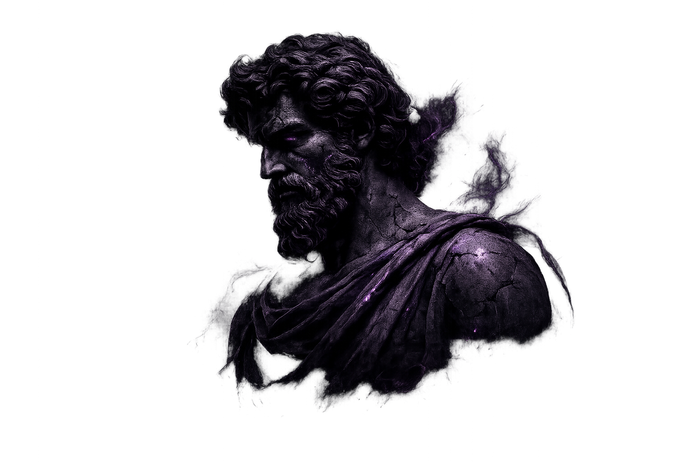
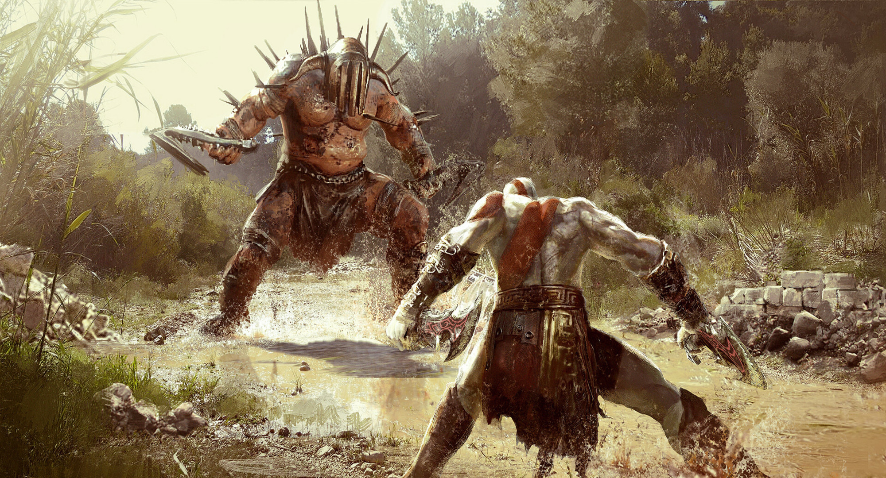
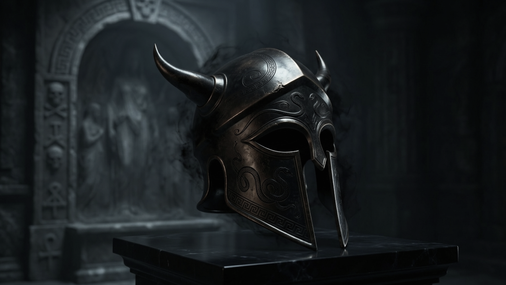
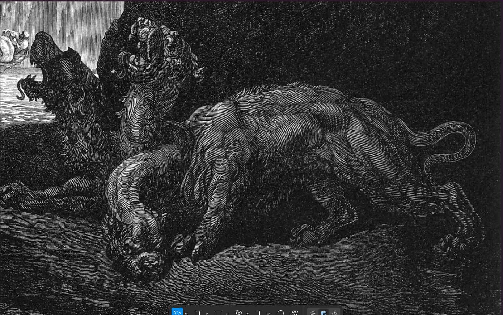
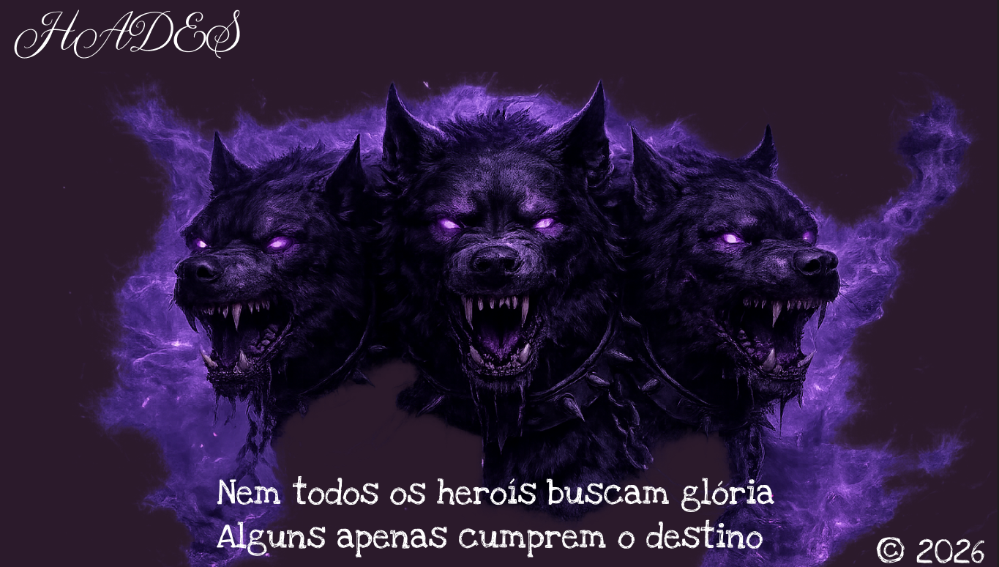

Tudo começou com o Caos, o vazio primordial
Dele surgiram outros deuses
Como Gaia (a Terra) e Urano (o Céu).
Através de muitas gerações e conflitos violentos
como a castração de Urano por seu filho Cronos
e a
posterior revolta de Zeus contra os Titãs
a ordem foi estabelecida
HADES
Rei Do Submundo
Poder & Mistério

Hades era o filho mais velho dos Titãs Cronos e Reia. Assim como seus irmãos, ele foi engolido pelo próprio pai, que tinha medo de ser castrado. Depois que Zeus (o caçula) libertou todo mundo e eles venceram a guerra contra os Titãs, os três irmãos fizeram um sorteio para dividir o universo:

Características
Elmo da invisibilidade:

Na antiguidade, as pessoas tinham medo de dizer
o nome
"Hades"
Então o chamavam de Plutão (o rico)
Para tentar atrair prosperidade em vez de morte.
Cerberus
A fiel fera de Hades
Possui três cabeças e cauda de serpente
servindo como o
guardião implacável
dos portões do reino dos mortos.

